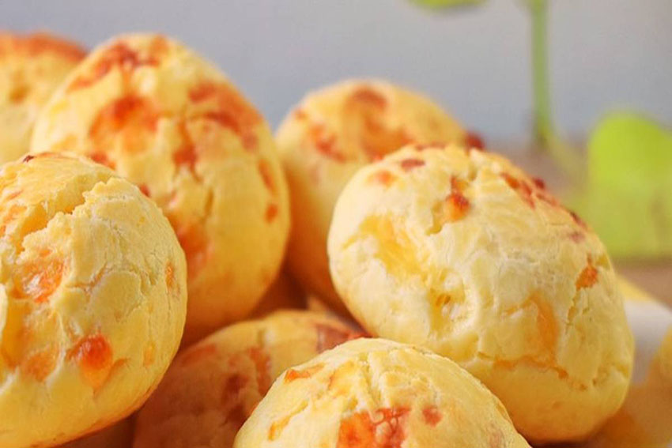

Chipa

Ingredientes
- 1 paquete de harina de mandioca
- 500 gramos de queso
- 2 o 3 huevos
- Un chorrito de agua
Preparación
- Mezclar la harina de mandioca con los huevos y un chorro de agua
- Calentar una bandeja enmantecada
- Amasar la mezcla en formas de bollitos
- Meter en el horno durante 25 minutos a fuego medio